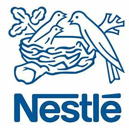
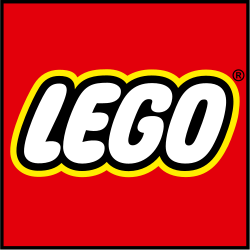
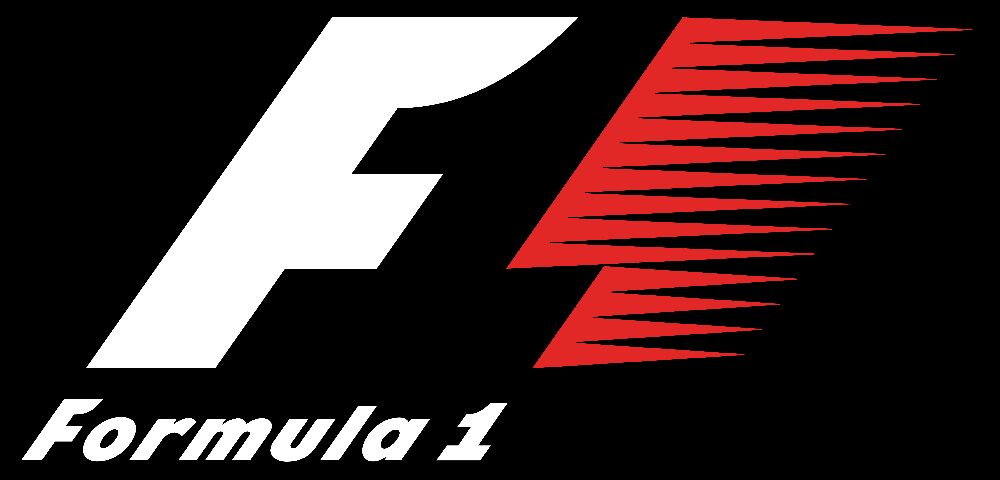
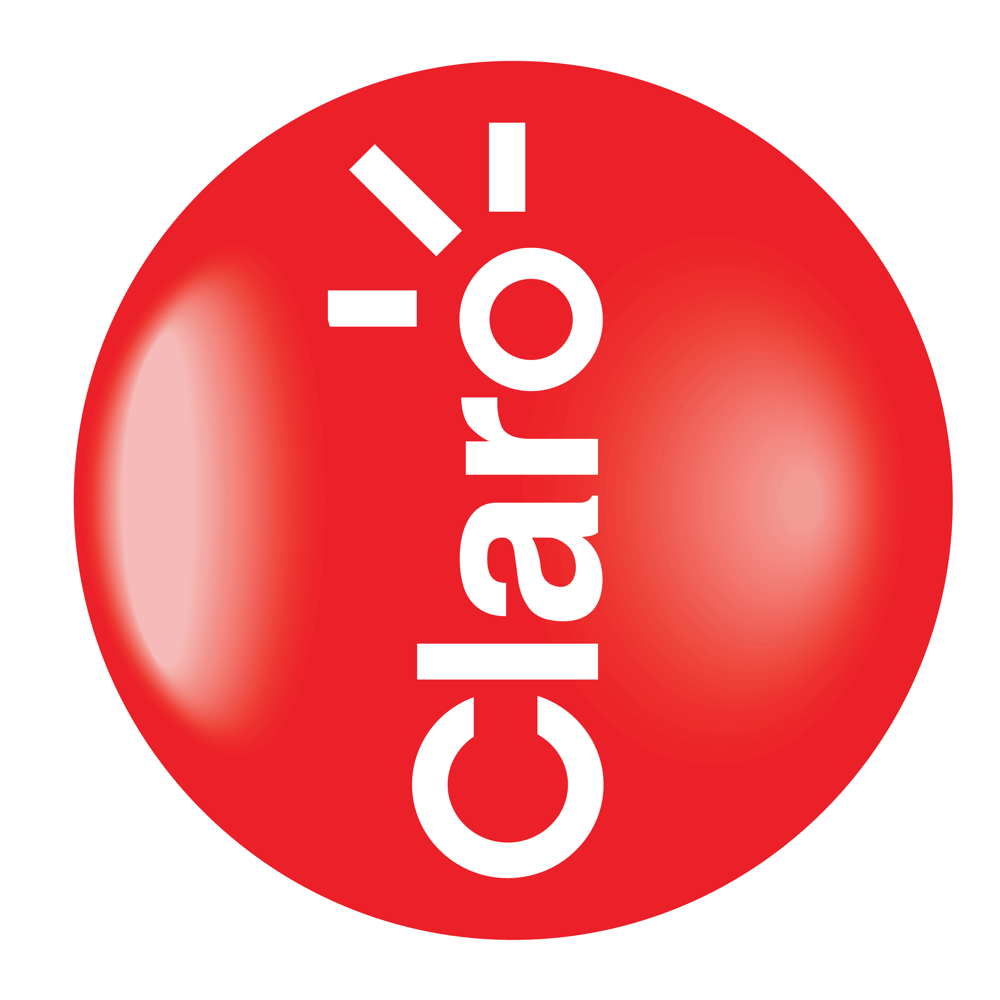
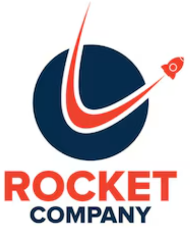

Independent Marketing Science, AI & Measurement Strategy Advisory
I'm Andrés Acosta, a Marketing Science and AI executive with over 15 years of experience helping organizations turn advanced analytics into better business decisions, better marketing investment strategies and commercial impact.
Most organizations lack senior interpretation, governance, adoption and clear decision frameworks. My work focuses on helping leaders understand what can be trusted, what cannot, what decisions models support and how different vendors compare against each other.
The Marketing Scientist provides independent advisory support for executives, growth teams and investors evaluating marketing measurement systems, AI based Marketing Science and Measurement products, vendor claims, attribution platforms, MMM providers, incrementality programs and agency/platform measurement outputs.
Core Advisory Areas
Independent second opinions on MMM, attribution, incrementality, geo-testing, dashboards, vendor reports and agency measurement outputs.
Marketing measurement architecture across MMM, attribution, experimentation, customer analytics, precision science, media reporting and executive decision-making.
Build-vs-buy-vs-agency evaluation for measurement platforms, capabilities and AI Marketing Science products.
Executive translation of model into media and audience strategy, budget decisions, commercial priorities and governance.
AI and Marketing Science product strategy focused on adoption, usability, commercialization and business impact.
Experience & Impact
Across global agencies, holding companies, and high-growth organizations, I have led Marketing Science, AI, analytics, product, and measurement initiatives across LATAM, the United States, and global client environments.
Generated $800,000 in revenue within six months after project approval by scaling High-Value Audience Models across US, LATAM and EMEA markets.
Created the Creative Measurement Suite, driving $600,000 in sales within six months after project approval.
Delivered $2.6M in attribution model sales and increased ROAS by 22% for LATAM clients.
Led large-scale global Marketing Mix Modeling programs, delivering hundreds of models per year.
Built and scaled regional data, analytics, AI, and Marketing Science teams for global advertising holding companies.
Reduced Customer Acquisition Costs by 40% for a regional telecom business through advanced optimization algorithms.
Advised executive stakeholders on measurement strategy, vendor evaluation, measurement alternatives, commercialization opportunities, product positioning and client risk mitigation.
Owned the product strategy and roadmap for AI analytics capabilities, including causal measurement, customer intelligence, brand measurement and experiment based decision frameworks.
Partnered with executive and commercial stakeholders to advance AI products from concept to validation, pilot design and deployment.
And most importantly: I know the agency and platform business end to end. I know how their profitability does not necessarily translate into your profitability.
Experience Across Global Brands
My experience spans global and regional brands across CPG, retail, automotive, telecom, finance, entertainment, healthcare, technology and consumer services.





Articles & Perspective
I write about Marketing Science, AI, measurement strategy, vendor evaluation, measurement reliability, executive translation, product governance and the organizational challenges of turning models into decisions.
Marketing Mix Modeling, attribution, incrementality and full-funnel measurement.
High-value audience identification and customer intelligence.
Responsible, explainable and commercially useful AI.
Work With Me
The Marketing Scientist is designed for organizations that need independent senior judgment before making high-stakes decisions about marketing measurement, AI strategy, analytics vendors, platforms, agencies or internal capabilities.
Typical situations include evaluating whether to trust a measurement vendor, interpreting MMM or attribution outputs, redesigning measurement architecture, assessing an AI or analytics product opportunity or translating technical analysis into executive decisions.